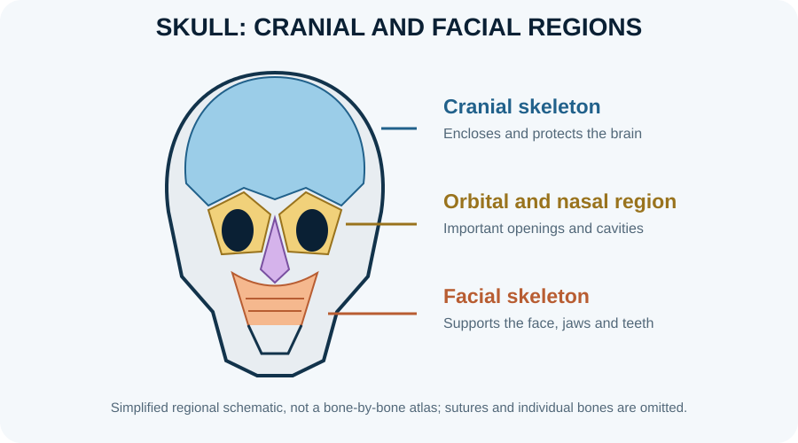

Bones of the skull

The adult skull is commonly described as 22 bones, excluding the auditory ossicles and hyoid. Eight form the neurocranium and fourteen form the facial skeleton. Most are joined by fibrous sutures; the mandible is the major freely movable skull bone.
Learning objectives
- Distinguish the neurocranium from the viscerocranium.
- Identify the main functions of cranial bones, facial bones, sutures and major openings.
- Relate skull foramina to the nerves and vessels that pass through them.
- Explain how skull anatomy protects the brain while permitting communication with the neck and face.
High-yield study points
- Neurocranial bones: frontal, occipital, sphenoid, ethmoid, two parietal and two temporal bones.
- Facial bones include the mandible, vomer, two maxillae, paired zygomatic, nasal, lacrimal, palatine and inferior nasal conchae.
- The sphenoid contributes to the cranial floor and contains the sella turcica.
- The foramen magnum transmits the medulla-spinal cord continuity, meninges and vertebral arteries.
- The orbit is formed by contributions from seven bones.
Clinical connection
Skull-base fractures may affect cranial nerves or vessels and can be associated with cerebrospinal fluid leakage.
Check your understanding
- What are the two broad divisions of the skull?
Reveal answer
The neurocranium and viscerocranium (facial skeleton).
- Which large opening in the occipital bone transmits the medulla as it continues into the spinal cord?
Reveal answer
The foramen magnum.
- What is a cranial suture?
Reveal answer
A fibrous joint between skull bones, most of which are immobile in the adult skull.
Further reading and practical study
OpenStax, Anatomy and Physiology 2e — axial skeleton and skull. For practical identification, group bones into cranial and facial components, then identify each bone by its articulations, foramina, processes and neighbouring structures. A foramen should be learned with the principal structures transmitted through it, while recognising that small vessels and variant branches may differ.
Skull osteology: fossae, foramina, sutures and clinical relationships
Neurocranium and viscerocranium
The neurocranium encloses and protects the brain and consists of the frontal, occipital, sphenoid, ethmoid, paired parietal and paired temporal bones. The viscerocranium forms the facial framework and includes the mandible, vomer, paired maxillae, zygomatic, nasal, lacrimal, palatine and inferior nasal conchae. The adult skull is commonly counted as 22 bones, excluding auditory ossicles and the hyoid. Sutures are fibrous joints that permit growth and transmit force; the mandible articulates with the temporal bone at the temporomandibular joint.
External landmarks and cranial fossae
Useful external landmarks include the glabella, nasion, supraorbital margin, zygomatic arch, mastoid process, external occipital protuberance, pterion and asterion. The cranial base is described as anterior, middle and posterior cranial fossae. The anterior fossa supports frontal lobes; the middle fossa contains the temporal lobes and central sphenoid region; the posterior fossa houses the cerebellum, pons and medulla. These are spatial compartments, not sealed boxes, because nerves, vessels and cerebrospinal-fluid pathways traverse their openings.
High-yield foramina and transmitted structures
- Cribriform plate: olfactory nerve filaments (CN I).
- Optic canal: optic nerve (CN II) and ophthalmic artery.
- Superior orbital fissure: CN III, IV, V1 and VI, plus ophthalmic venous structures.
- Foramen rotundum: maxillary division of trigeminal nerve (V2).
- Foramen ovale: mandibular division (V3), with additional variable small structures.
- Foramen spinosum: middle meningeal vessels.
- Internal acoustic meatus: facial nerve (VII), vestibulocochlear nerve (VIII) and labyrinthine vessels.
- Jugular foramen: CN IX, X and XI with major venous drainage.
- Hypoglossal canal: hypoglossal nerve (XII).
- Foramen magnum: medulla/spinal cord continuity, meninges, vertebral arteries and spinal roots of accessory nerve among other structures.
Foramina are best learned by locating them on the cranial base and tracing each structure’s destination. A memorised list without spatial orientation is easy to confuse.
Pterion and trauma
The pterion is a thin region where frontal, parietal, sphenoid and temporal bones meet. The anterior branch of the middle meningeal artery runs deep to this area, so a fracture may cause an extradural (epidural) haematoma. The classic lucid interval is not universal; deterioration after head injury is an emergency. Skull-base fractures can affect cranial nerves, vascular structures and cerebrospinal-fluid barriers.
Development and clinical anatomy
Many cranial bones develop by intramembranous ossification, while parts of the cranial base develop through endochondral ossification. Fontanelles allow moulding and growth in infancy; premature fusion of sutures can alter skull shape and may restrict growth. Paranasal sinuses lighten the skull and influence resonance but also create routes for infection to spread from nasal cavities. The temporomandibular joint combines hinge and gliding movement; disc displacement, muscle dysfunction and joint disease can cause pain or restricted opening.